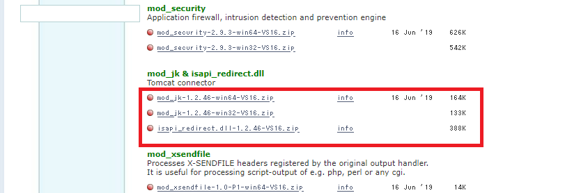
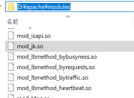
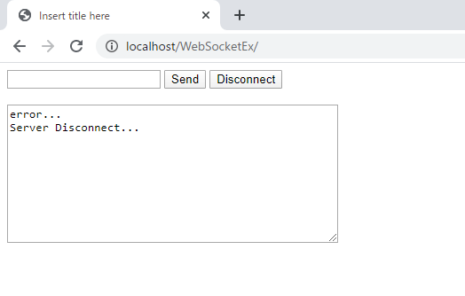
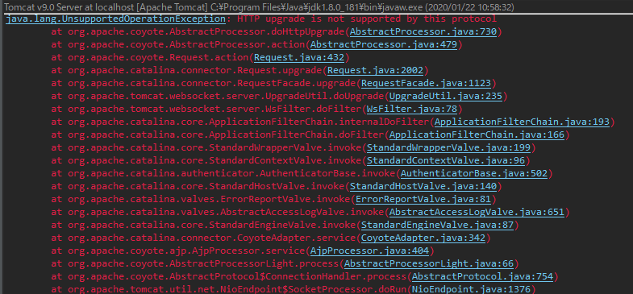
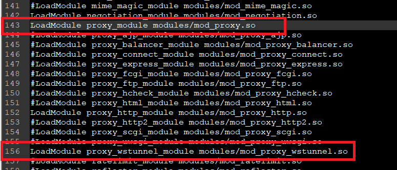
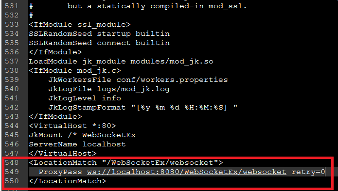
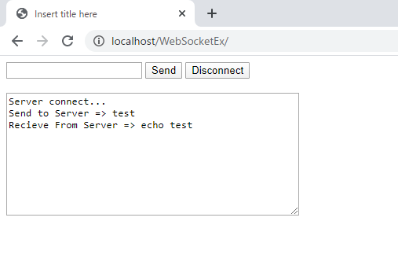
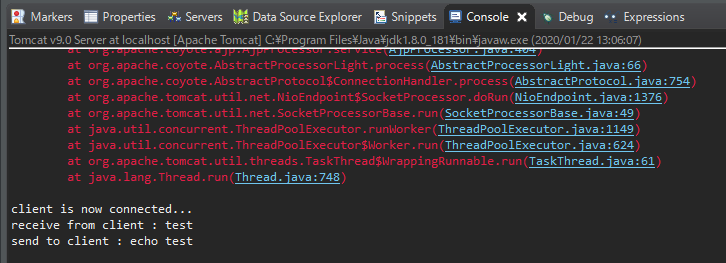

[Window] Apacheでmod_jkとmod_proxyの差異、apacheでtomcatのwebsocketのプロキシフォーワードする方法
こんにちは。明月です。
この投稿はApacheでmod_jkとmod_proxyの差異、apacheでtomcatのwebsocketのプロキシフォーワードする方法に関する説明です。
以前にTomcatとapacheを連携する方法に関して説明したことがあります。
link - [CentOS] ApacheとTomcatの連携
link - [PHP] Apache環境の同じホスト中でPHPとJava(Servlet)を同時に起動、運用する方法
上のリンクを見るとapacheとtomcatを連携する方法に関してmod_jkを利用する方法があるし、mod_proxyを利用する方法があります。
始めのリンクはmod_jkでapacheとtomcatを連携する方法で説明したし、二つ目はmod_proxyでapacheとtomcatを連携してcomplex languageを使う方法に関して説明しました。
二つの連携方法に関して各の特徴がありますが、mod_jkで連携する方がapacheとtomcatを完全に連結することです。
つまり、仮想ディレクトリを作成するならapacheだけ設定することではなく、tomcatにも設定をしなければならないです。もちろん、apacheにも仮想ディレクトリを設定することが可能ですが、様々な問題が発生する可能性があります。
<VirtualHost *:80>
# ルート(/)を基づいてtomcatと連携した。
JkMount /* WebSocketEx
ServerName localhost
</VirtualHost>
worker.list=WebSocketEx
worker.WebSocketEx.port=8009
worker.WebSocketEx.host=localhost
worker.WebSocketEx.type=ajp13
worker.WebSocketEx.lbfactor=1
mod_jkで連携したVirtualHostですが、ここで私が「JkMount /* WebSocketEx」を「JkMount /java/* WebSocketEx」に設定を変わると「localhost/java」や「localhost:8009/」をフォーワードすることではなく、「localhost:8009/java」を指すことになります。
つまり、tomcatにも仮想ディレクトリを合わせなければならないです。このように設定するとかなり複雑になります。なぜならルートは仮想ディレクトリに使うことができなくなったからです。
<VirtualHost *:80>
ServerName localhost
ProxyRequests Off
ProxyPreserveHost On
## javaと連結するajpアドレス
ProxyPass /java ajp://localhost:8009/
ProxyPassReverse /java ajp://localhost:8009/
</VirtualHost>
でも、complex languageにはルート(/)をphpで使って「ProxyPass /java ajp://localhost:8009/」を使う場合は「localhost/java」が「localhost:8009/」にフォーワードすることになります。
つまり、tomcatのajpアドレスだけ合わせるとその以外にtomcatには別の仮想ディレクトリ設定が必要がないです。
そうするとここでmod_jkよりtomcat設定変更が必要ないmod_proxyを連結する方が便利ではないかと思います。
(mod_proxyはapacheの基本モジュールだし、mod_jkの場合はconnectorをダウンロードするべきな面倒もあります。)
でも、mod_jkの場合はapacheとtomcat間の2進パケット転送サイズが64kbだし、mod_proxyは8kbです。つまり、性能側ではmod_jkがmod_proxyより圧倒的によいし、ロードバランシングすることも柔軟して適用することが可能です。
(ajpはapacheとtomcat間の2進パケットですが、結局にapacheとtomcat間に内部通信を利用して送受信することです。)
link - http://javafatihk.blogspot.com/2014/11/modjk-modproxy-and-modproxyajp.html
一つのサーバには様々な言語の特性を使うためにmod_proxyが良いと思いますが、トラフィックが多い数多いサーバや性能が考慮することならmod_jkを使うことが良いでしょう。(トラフィックが多いウェブサービスなら1kb差異は大きい差異です。)
でも、そのように認知したことはapache 2.2の時代の話です。現在はapacheのバージョンが2.4で以前より良く改善したと聞きました。(最近は性能差異が大きくないと言いますね。そうするとmod_proxyが便利だから選択肢の余地がないけど。。。)
link - https://cwiki.apache.org/confluence/display/TOMCAT/Connectors
そうするとapacheとtomcat間にwebsocketを連結しましょう。
実はこれを説明するためにmod_jkとmod_proxyの特性が必要です。
websocketはウェブサーバとブラウザ間に同じhttpプロトコールを利用することですが、ウェブの場合は非同期(要請応答した後、ソケット接続が切り捨てる。)、WebSocketは同期(接続した後にも連結を保持)のソケット通信方式です。
apacheとtomcat間のajpプロトコールは同期通信方式ではありません。なので別に連結する方法が必要です。
まず、トムキャット側のJavaソースは以前にWebSocketに関して説明したことがあるので、ソースをそのままに使います。
link - [Java] WebSocket (ウェブソケット)
import javax.websocket.OnClose;
import javax.websocket.OnError;
import javax.websocket.OnMessage;
import javax.websocket.OnOpen;
import javax.websocket.server.ServerEndpoint;
// WebSocketのホストアドレス設定
@ServerEndpoint("/websocket")
public class Websocket {
// WebSocket serverにブラウザ(client)が接続すれば呼ばれる関数。
@OnOpen
public void handleOpen() {
// コンソールにメッセージを出力する。
System.out.println("client is now connected...");
}
// WebSocket serverにブラウザ(client)がメッセージを転送すれば呼ばれる関数。
@OnMessage
public String handleMessage(String message) {
// コンソールに受け取ったメッセージを出力する。
System.out.println("receive from client : " + message);
// クライアントに転送するようなエコメッセージを作成する。
String replymessage = "echo "+ message;
// コンソールにエコメッセージを出力する。
System.out.println("send to client : " + replymessage);
// ブラウザにエコメッセージを転送する。
return replymessage;
}
// WebSocket serverにブラウザ(client)が切断すれば呼ばれる関数。
@OnClose
public void handleClose() {
// コンソールにメッセージを出力する。
System.out.println("client is now disconnected...");
}
// WebSocket serverにブラウザ(client)がエラーが発生すれば呼ばれる関数。
@OnError
public void handleError(Throwable t) {
// コンソールにエラーメッセージを表示する。
t.printStackTrace();
}
}
<%@ page language="java" contentType="text/html; charset=UTF-8" pageEncoding="UTF-8"%>
<!DOCTYPE html>
<html>
<head><title>Web Socket Example</title></head>
<body>
<form>
<!-- 送信メッセージを作成するテキストボックス -->
<input id="textMessage" type="text">
<!-- メッセージを送信するボタン -->
<input onclick="sendMessage()" value="Send" type="button">
<!-- WebSocket終了(切断)するボタン -->
<input onclick="disconnect()" value="Disconnect" type="button">
</form>
<br />
<!-- コンソール役をするテキストアリア、受信メッセージも表示する。 -->
<textarea id="messageTextArea" rows="10" cols="50"></textarea>
<script type="text/javascript">
// 「WebSocketEx」はプロジェクト名
// 「websocket」ホスト名
// WebSocketオブジェクト生成(接続開始)
// var webSocket = new WebSocket("ws://localhost:8080/WebSocketEx/websocket");
// apacheに接続するためには8080ではなく80(apacheで設定したポート)に接続する。
var webSocket = new WebSocket("ws://localhost/WebSocketEx/websocket");
// コンソールのテキストアリア
var messageTextArea = document.getElementById("messageTextArea");
// WebSocketが接続成功になれば呼ばれる関数。
webSocket.onopen = function(message) {
// コンソールにメッセージ出力
messageTextArea.value += "Server connect...\n";
};
// WebSocketが切断なれば呼ばれる関数。
webSocket.onclose = function(message) {
// コンソールにメッセージ出力
messageTextArea.value += "Server Disconnect...\n";
};
// WebSocketからエラーが発生する時に呼ばれる関数。
webSocket.onerror = function(message) {
// コンソールにメッセージ出力
messageTextArea.value += "error...\n";
};
// WebSocketからメッセージを受け取ったら呼ばれる関数。
webSocket.onmessage = function(message) {
// コンソールにメッセージ出力
messageTextArea.value += "Recieve From Server => "+message.data+"\n";
};
// Sendボタンを押下すると呼ばれる関数。
function sendMessage() {
// 送信メッセージを作成するテキストボックスのオブジェクトを取得する。
var message = document.getElementById("textMessage");
// コンソールにメッセージを出力
messageTextArea.value += "Send to Server => "+message.value+"\n";
// WebSocketにメッセージを送信する。
webSocket.send(message.value);
// 送信メッセージを作成するテクストボックスを初期化する。
message.value = "";
}
// Disconnectボタンを押下すると呼ばれる関数。
function disconnect() {
// WebSocket切断
webSocket.close();
}
</script>
</body>
</html>
私はtomcatを基本ポートでhttpは8080、ajpは8009で設定しました。apacheの場合は80で設定しました。
ウェブソケットで接続するアドレスはapacheを通ってtomcatに接続しなければならないので80ポートで接続します。
また、apacheの設定に戻りましょう。
ここではmod_jkで設定するつもりですが、以前の投稿はWindowだはなく、CentOSでmod_jkを連携する方法に関して説明しました。
(参考でmod_proxyを使う人がいらっしゃるとwebsocketは設定はmod_jkとmod_proxyが設定が同じなので、mod_jk設定は飛び越えて下のwebsocket設定部分から見ると良いでしょう。(link - apache websocket設定)
今回はWindowで設定をします。
Windowバージョンのmod_jkは別にコンパイルする必要なく、apacheloungeからダウンロードが可能です。
link - https://www.apachelounge.com/download/

ダウンロードしたら圧縮ファイルの中でmod_jk.soファイルがありますが、apacheのmodulesフォルダにコピーしましょう。

その後からはCentOSと設定が同じです。
link - [CentOS] ApacheとTomcatの連携
LoadModule jk_module modules/mod_jk.so
<IfModule mod_jk.c>
JkWorkersFile conf/workers.properties
JkLogFile logs/mod_jk.log
JkLogLevel info
JkLogStampFormat "[%y %m %d %H:%M:%S]"
</IfModule>
<VirtualHost *:80>
JkMount /* WebSocketEx
ServerName localhost
</VirtualHost>
worker.list=WebSocketEx
worker.WebSocketEx.port=8009
worker.WebSocketEx.host=localhost
worker.WebSocketEx.type=ajp13
worker.WebSocketEx.lbfactor=1
このように設定してapacheとトムキャット(eclipseでのデバッグ環境)で起動します。
そうしてウェブ環境をみるとwebsocketが接続ができません。

eclipseでコンソールログを見てもエラーが発生しています。

「java.lang.UnsupportedOperationException: HTTP upgrade is not supported by this protocol」エラーが発生しました。実はこの問題で設定が必要です。
ここで上で説明したとおりにapacheでwebsocket設定を追加しなければならないです。
httpd.confからmod_proxy.soとmod_proxy_wstunnel.soのコメントを解除しましょう。

そして一番下の部分でwebsocketアドレスを入力します。
<LocationMatch "/WebSocketEx/websocket">
ProxyPass ws://localhost:8080/WebSocketEx/websocket retry=0
</LocationMatch>

そしてapacheを再起動してブラウザに接続するとwebsocketが接続されることを確認できます。


link - https://community.bitnami.com/t/tomcat-8-websockets/39477
ここまでApacheでmod_jkとmod_proxyの差異、apacheでtomcatのwebsocketのプロキシフォーワードする方法に関する説明でした。
ご不明なところや間違いところがあればコメントしてください。
- [Window] apache-tomcatでロードバランシング(Load balancing)する方法とセッションクラスタリング（セッション共有）2021/11/05 16:58:45
- [Window] Apacheでmod_jkとmod_proxyの差異、apacheでtomcatのwebsocketのプロキシフォーワードする方法2021/11/05 16:55:05
- [Window] MariaDBをインストールする方法2021/10/08 18:56:05
- [Window] WindowでFTPサーバを構築する方法2020/03/19 03:27:22
- [Window] Apacheをインストール方法、サービスに登録する方法。2019/10/18 07:36:51
- [Window] WindowでExplorerのContext menuを修正する方法。2019/07/01 01:42:41
- [CentOS] Linux環境(CentOS)でCassandra(NoSQL DB)をインストールする方法(DBeaverブラウザでNoSQL使い方)2021/11/12 17:33:58
- [Design pattern] 3-3. コマンドパターン(Command pattern)2021/11/05 17:01:42
- [Window] apache-tomcatでロードバランシング(Load balancing)する方法とセッションクラスタリング（セッション共有）2021/11/05 16:58:45
- [Window] Apacheでmod_jkとmod_proxyの差異、apacheでtomcatのwebsocketのプロキシフォーワードする方法2021/11/05 16:55:05
- [PHP] Apache環境の同じホスト中でPHPとJava(Servlet)を同時に起動、運用する方法2021/11/05 16:52:04
- [C#] 61. ウィンドウフォーム(Window form)でスレッド(Thread)を使い方、クロススレッド問題解決2021/11/04 19:29:51
- [Design pattern] 3-2. 責任の連鎖パターン(Chain of responsibility pattern)2021/11/04 19:27:58
- [Design pattern] 3-1. ストラテジーパターン(Strategy pattern)2021/11/03 18:38:52
- [C#] 60. ウィンドウフォーム(Window form)のイベント設定する方法2021/11/02 21:18:08
- [Design pattern] 2-7. ファサードパターン(Facade pattern)2021/11/02 19:32:31
- [Design pattern] 2-6. プロキシパターン(Proxy pattern)2021/11/01 19:42:44
- [Design pattern] 2-5. フライウェイトパターン(Flyweight pattern)2021/10/29 19:48:27
- [C#] 59. ウィンドウフォーム(Window form)にコントロール(Control)を使い方法2021/10/29 19:45:43
- [Design pattern] 2-4. デコレーターパターン(Decorator pattern)2021/10/28 20:11:13
- [C#] 58. ウィンドウフォーム(Window form)を作成する方法、そしてウィンドウメッセージとキュー2021/10/27 20:35:44